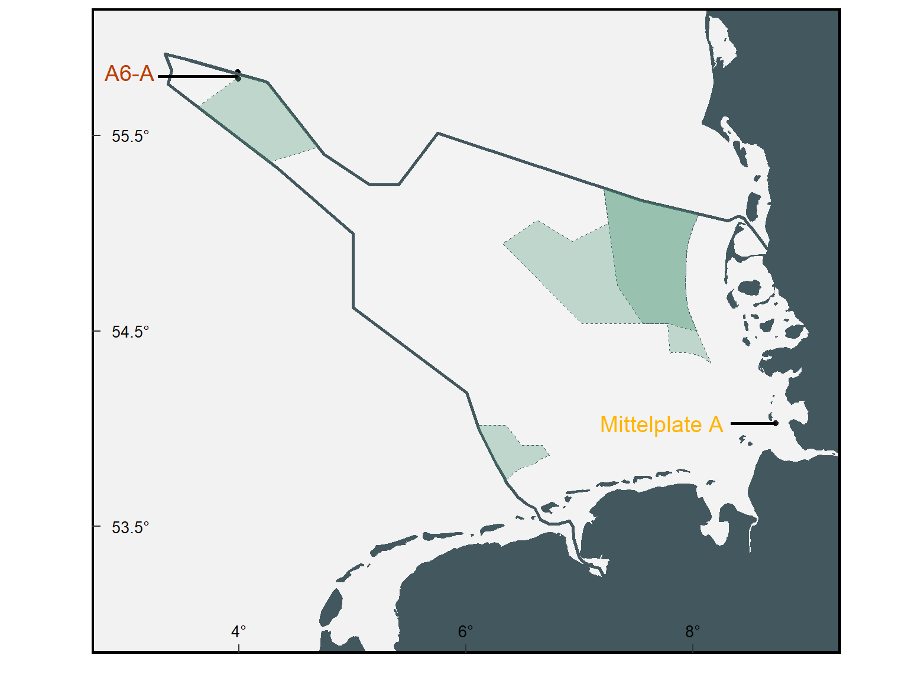
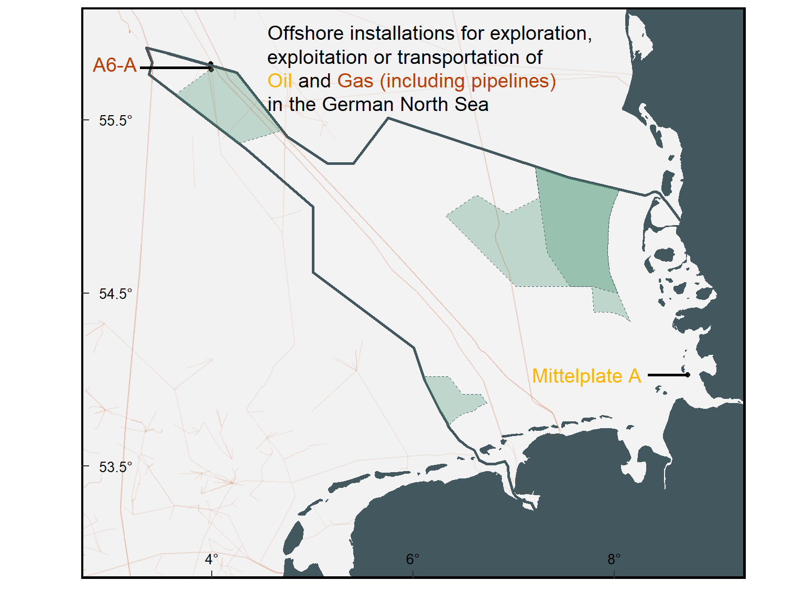

Intro
In this month’s blog post, I dive into the world of oil and gas infrastructure in the German North Sea. Using openly available geospatial data from EMODnet, I downloaded and analyzed datasets related to offshore installations and pipelines. Step by step, I walk through the process of transforming raw data into a map. Creating this visualization not only helped me better understand the spatial layout of these industrial structures, but also shed light on why a particular location has drawn criticism. The proximity to ecologically sensitive areas like Borkum Reef raises important questions, questions that are best understood when we can actually see the data.
Data
The dataset on offshore installations for Oil and Gas exploitation and exploration activities was created in 2015 by Cogea for the European Marine Observation and Data Network (EMODnet).
It is the result of the aggregation and harmonization of datasets provided by several EU and non-EU sources. It is updated every year, and is available for viewing and download on EMODnet Human Activities web portal (https://emodnet.ec.europa.eu/en/human-activities).
It contains points representing offshore installations and where available each point has the following attributes: ID, name, country, location block, operator, production start year, primary production, current status, category and function of the installation, sub-structure and topside weights (tonnes), water depth (metres), distance to coast (metres) and notes.
To download test gas and oil data in shp format click here.
To download pipelines data in shp format click here.
Oil and gas installations
Once you have download the data, select the directory and file.
library(here)
This_directory<-here()
list.files(This_directory)This_file<-paste0(This_directory,"/EMODnet_HA_OG_Offshore_Installations_20240216.shp")Use the function st_read from the package sf to read shapefiles in R.
Oil_shapefile<-st_read(This_file)Map
Use ggplot to visualize the information where this infrastructures occur.
Filter
The OSPAR commission source covers data for Germany, Ireland, Spain (Atlantic Sea), while for Italy data have been collected and harmonized from the Italian Ministry of Economic Development, for Denmark from the Danish Energy Agency, for the Netherlands from the TNO - Geological Survey of the Netherlands, for Croatia from the Croatian Hydrocarbon Agency, for Norway from the Norwegian Petroleum Directorate, for the UK from the Oil and Gas Authority (surface infrastructures), for Polish and Russian installations in the Baltic Sea from Marine Traffic and Helcom, finally from Marine Traffic come the data for Bulgarian, Russian and Ukrainian installations in the Black Sea and for Lybian and Spanish installations in the Mediterranean Sea.
unique(Oil_shapefile$COUNTRY)Load tidyverse to make a filter.
Keep only Germany data.
Use geom_sf to visualize the points. There are 3 data points for Germany.
Places
Create a base map using shapefiles from the package GermanNorthSea.
library(GermanNorthSea)Add the attributes and the theme to your base map.
Oil_germany<-st_transform(Oil_germany,4326)
German_EEZ<-st_transform(German_EEZ,4326)
German_land<-st_transform(German_land,4326)
German_SCA<-st_transform(German_SCA,4326)
German_natura<-st_transform(German_natura,4326)Base_map<-ggplot() +
geom_sf(data = Oil_germany)+
# Fill colors
geom_sf(data = German_EEZ, color='#43585E',fill='transparent',alpha=0.1, linewidth = 1)+
geom_sf(data = German_land, colour = '#43585E', fill = '#43585E')+
geom_sf(data = German_SCA, colour = '#43585E', fill = '#40916c',
linewidth=0.1, linetype = "dashed",alpha=0.3)+
geom_sf(data = German_natura, colour = '#43585E', fill = '#40916c',
linewidth=0.1, linetype = "dashed",alpha=0.3)+
scale_x_continuous(breaks = c(4,6,8),labels = function(x) paste0(x, '\u00B0')) +
scale_y_continuous(breaks = c(53.5,54.5,55.5),labels = function(x) paste0(x, '\u00B0')) +
theme(
axis.text.x = element_text(size=10,vjust = 12,color='black'),
axis.text.y = element_text(color='black',size=10,margin = margin(0,-1.30,0,1, unit = 'cm')),
axis.title = element_blank(),
axis.ticks.length=unit(-0.20, "cm"),
panel.grid.major = element_blank(),
panel.grid.minor = element_blank(),
panel.background = element_rect(fill = '#F2F2F2'))+
xlab('Longitude')+ylab('Latitude')+
theme(panel.border = element_rect(colour = "black", fill=NA, linewidth = 1.5))+
coord_sf(ylim = c(53,56), xlim = c(3,9),
label_axes = list(left = "N", bottom = 'E'))Using annotate, add the names of the platforms.
Oil_1plot<-Base_map+
annotate("text",
x = 3.98639-0.95, y = 55.82222, label = "A6-A",size=5,colour ="#bb3e03")+
annotate("segment",
x = 3.98639, xend = 3.98639-0.7,
y = 55.82222-0.02, yend = 55.82222-0.02,colour = 'black', linewidth=1)+
annotate("text",
x = 8.73111-1, y = 54.02583, label ="Mittelplate A",size=5,color="#ffb400")+
annotate("segment",
x = 8.73111, xend = 8.73111-0.4,
y = 54.02583, yend = 54.02583, color= 'black', linewidth=1)+
NULL
Oil_1plot
Mittleplate A
Mittelplate is Germany’s largest oil field, located 7 km (4.3 mi) offshore in the ecologically sensitive tidal flats of the Schleswig-Holstein Wadden Sea National Park. The field was developed by a joint venture between RWE Dea and Wintershall. By the 20th anniversary of production, the field had yielded approximately 20 million tonnes (22 million tons), or about 146 million barrels, of crude oil. Mittelplate contains nearly 65% of Germany’s total crude oil reserves. Source: Wikipedia

A6-A
A6/B4 is Germany’s only operational offshore gas field, located about 300 km off the coast in the North Sea, within Germany’s exclusive economic zone. Discovered in 1974 and producing since 2000, it supplies around 5% of Germany’s natural gas. By the end of 2006, it had produced 6.7 billion cubic meters. Operated by the German North Sea Consortium, with Wintershall Noordzee B.V. managing production, the platform sits in 48 meters of water and typically hosts ten workers. Gas and condensate are piped to a Dutch platform, where the condensate is shipped and the gas sent to the mainland via the NOGAT pipeline. Source: Wikipedia

Pipelines
Pipeline gas refer to natural gas that is transported through a network of high-pressure pipelines from production or processing facilities to end users, such as power plants, industries, or residential areas.
To load the data:
Filter
The pipelines data set from EMODnet contains different types.
unique(Pipelines_shapefile$MEDIUM)For this exercise select only those containing gas.
The data set also contains data from different countries.
unique(Pipelines_gas$COUNTRY)For this exercise, select Germany and surrounding countries.
Map
Add a geom_sf in the previous plot to visualize the gas pipelines.
Text
The package ggtext allows to add colors into labels.
Add the title on the map.
Oil_3plot<-Oil_2plot +
geom_richtext(aes(x = 4.5, y = 55.5,
label = "Offshore installations for exploration, <br>
exploitation or transportation of<br>
<span style='color:#ffb400'>Oil</span>
and
<span style='color:#bb3e03'>Gas (including pipelines) </span> <br>
in the German North Sea"),
size = 5,
fill = NA,
label.color = NA, # remove background and outline
hjust = 0,
vjust= 0,
inherit.aes = TRUE
)+
NULL
Oil_3plot
Considerations
Offshore oil and gas operations activities can have environmental impacts throughout their entire lifecycle, including exploration, production, and decommissioning. Potential impacts include the discharge of produced water, oil, chemicals, drilling muds, and cuttings; physical disturbances from the installation of infrastructure and pipelines; noise generated by seismic surveys and drilling; light pollution from installations; and atmospheric emissions. Source: OSPAR

Borkum + N05-A
On July 2, 2025, the German federal cabinet approved a treaty that permits Dutch-led natural gas extraction extending into German territorial waters near Borkum. The initiative is intended to enhance energy security and meet commitments outlined in the governing coalition’s energy strategy. However, environmental organizations have raised concerns, warning that the project poses risks to the Wadden Sea, undermines climate objectives, and lacks adequate public scrutiny and legal oversight. The agreement still requires legislative ratification and is subject to ongoing judicial review. Source: Tagesschau.
The N05-A platform is situated in Dutch waters, approximately 1.5 kilometers from the German maritime border. By autumn 2024, the first well is expected to be drilled, enabling natural gas extraction from the Dutch sector of the North Sea. Source: Project GEMS, Spiegel.
The proposed gas field is located in close proximity to the Borkum Reef Ground NCA. This area is the smallest of three designated nature conservation areas within Germany’s Exclusive Economic Zone (EEZ) in the North Sea. It has been recognized as a Special Area of Conservation (SAC) under the EU Habitats Directive, and was officially designated a German NCA in 2017. Sources: Borkum Reef Ground NCA, Oceana.
Oil_4plot<-Oil_3plot+
geom_point(aes(x = 6.3620, y = 53.67800), color = 'orange',size=4,shape=17)+
annotate("text",
x = 6.3620-0.5, y = 53.678, label = "N05-A",size=4,colour ='orange')+
annotate("segment",
x = 6.3620, xend = 6.3620-0.2,
y = 53.678, yend = 53.678,colour = 'orange', linewidth=1)+
annotate("text",
x = 6.70-1.6, y = 53.89, label = "Borkum Reef Ground",size=4,colour ='#2d6a4f')+
annotate("segment",
x = 6.70-0.4, xend = 6.70-0.8,
y = 53.89, yend = 53.89,colour = '#2d6a4f', linewidth=1)
Oil_4plotReferences
Assessment of impacts of the offshore oil and gas industry on the marine environment
Todd, V. L. G., Pearse, W. D., Tregenza, N. C., Lepper, P. A., and Todd, I. B. 2009. Diel echolocation activity of harbour porpoises (Phocoena phocoena) around North Sea offshore gas installations. – ICES Journal of Marine Science, 66: 734–745. Link
Tasker, M L., Jones P. H., Blake, B. F., Dixon T. J., and Wallis, A. W. 1985. Seabirds associated with oil production platforms in the North Sea. – Ringing & Migration, 7: 7–14. Link